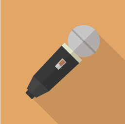
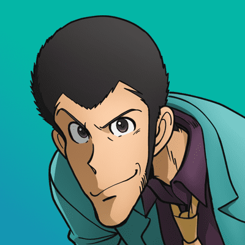

宅飲み生放送打ち切りの真実
6/15 2022
カテゴリー：新着情報

―カズマとの関係性―
20年近い付き合いの2人だが意外にも信頼関係は低い？

何故、注意しないのですか？

「悪いことしたら謝ろうね」なんてアラサーの男に言うことですか？
まぁ…、言いませんね(苦笑)
それに成人を過ぎると性格や価値観って変えにくいんですよ、おそらくカズマは何も悪くないと思っているはずですよ。だから謝罪しないんでしょう。
ASRさんにとってカズマさんとはどんな存在？
まぁ、付き合いも長いですし遊ぶだけなら良い友人の一人ですよ。ただ人間性に関しては申し訳ないけどクズかもしれない
手厳しい答えですね…。
カズマに限らず、誰にだって欠点や悪い所はありますし、もちろん自分だって沢山悪い所はあります。でも、何かしてもらったらお礼は言うし、悪いことをしたら謝罪はします。相手を思いやる気持ちがカズマには足りないんじゃないかな？
結局は思いやりが大事ということですね。
親しき中にも礼儀あり、この言葉を忘れた時、人は離れていきます。一人、また一人と気づいた時には孤独な老後を迎えるかもしれません。そうならないように皆さん、誰であっても礼儀をもって接しましょう。
今回は貴重なお話をありがとうございました。
こちらこそ、ありがとうございました。次回のインタビューなんですけど…リスケしていいっすか？
おい！(笑)
ASR58世さん、最後まで毒のある笑いをありがとうございました(笑)